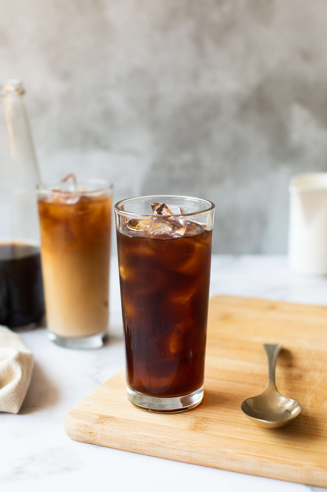
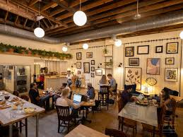

Nuestro menú combina tradición y creatividad, ofreciendo bebidas y productos elaborados con ingredientes de calidad y preparados diariamente. Cada opción ha sido pensada para complementar la experiencia del café y brindar alternativas para distintos gustos y momentos.
Café de especialidad
Espresso, cappuccino, latte, americano y métodos filtrados como V60 o prensa francesa. Utilizamos granos seleccionados que destacan por sus notas aromáticas, acidez equilibrada y cuerpo agradable, permitiendo disfrutar el café en su máxima expresión.
Postres caseros
Cheesecake, brownies, tartas, galletas y repostería artesanal elaborada diariamente. Nuestros postres están diseñados para acompañar el café y resaltar sus sabores, combinando dulzura equilibrada y textura suave.

Bebidas frías
Frappés, cold brew, smoothies y jugos naturales preparados al momento. Son opciones refrescantes ideales para climas cálidos o para quienes buscan una alternativa ligera y energizante durante el día.

Espacio cowork
Contamos con un ambiente tranquilo equipado con WiFi, enchufes y mesas cómodas. Es el lugar perfecto para estudiar, trabajar o realizar reuniones informales mientras disfrutas de una bebida de calidad.